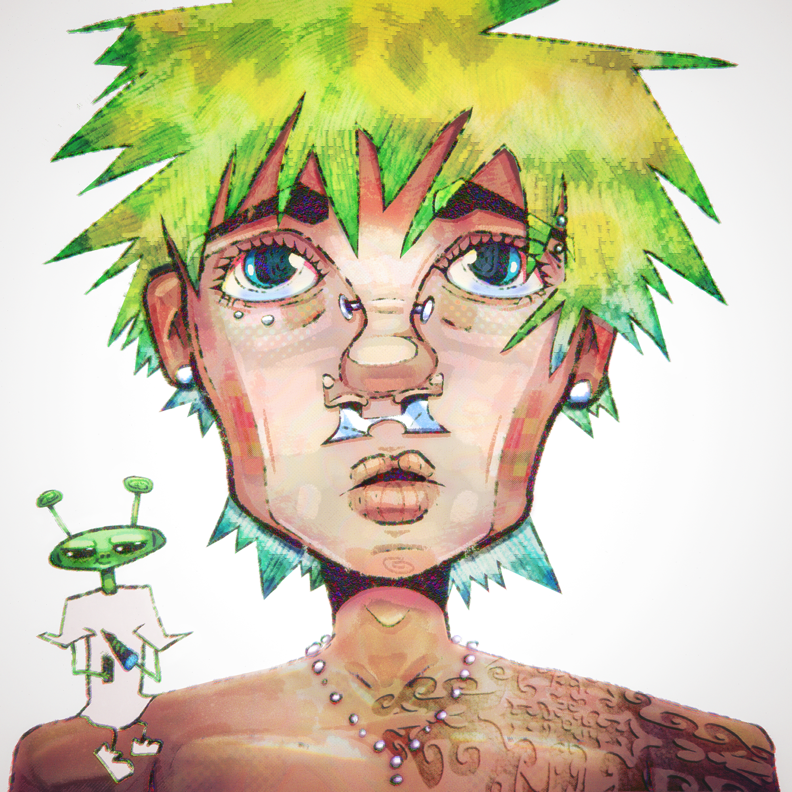
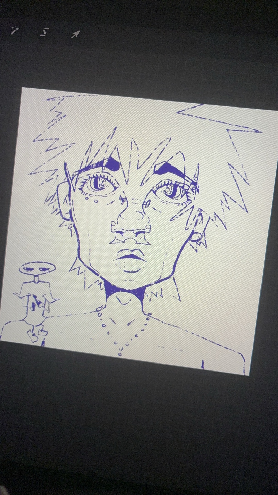
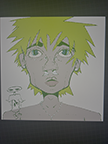
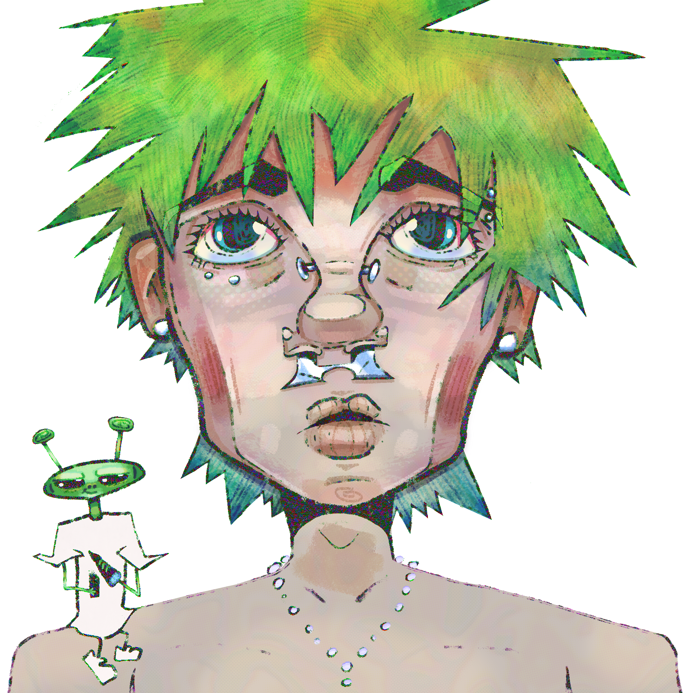

Max loves to reference esoterica, psychedelic imagery, and graffiti in his work. Max’s digital illustration skills, paired with a unique and wide variety of influences, result in highly compelling art and design work. Max typically includes stylized portraiture and typographical lettering in his work, all of which comes from his own imagination (he never uses a reference). Below is an example of one of Max’s illustrations through all of its iterative phases.



My relationship with design started around 7 years ago, a bit before quarantine, when I joined an online Fortnite / Call of Duty trick-shooting community.They sort of gave me the ropes, and that's where I gained a solid appreciation for design.